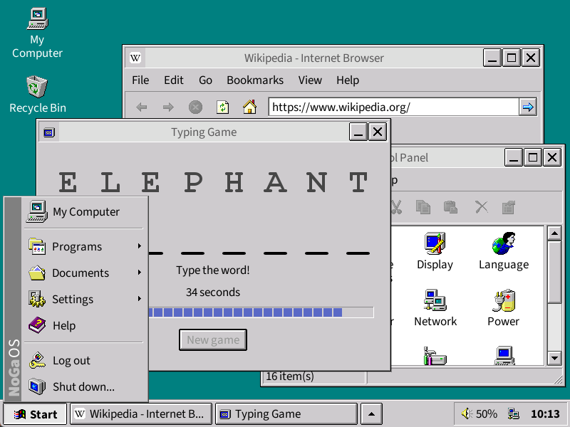

NoGa OS is a virtual operating system for kids: a complete desktop with its own windows, files and apps. It helps kids learn real computer basics in a controlled space: mouse, keyboard, windows, files, and simple educational/play apps. It is intentionally not a real operating system: the host does the low-level work, so all the effort goes into what a kid actually sees and touches. And it is a gateway rather than a destination: a kid outgrows it in a few years and moves on to Windows, macOS or Linux, so NoGa OS keeps to the habits those desktops share, made bigger, fewer and plainer, instead of inventing its own.
40 MB · released 23 October 2026 · needs Java 17+ Linux, Windows, macOS and Raspberry Pi

Running it
Install Java 17 or newer, then run the downloaded file:
java -jar nogaos-208.jar
The first start asks you to create an account. Video and audio playback need VLC installed on the computer; nothing else does.
A computer of their own
An old laptop or a Raspberry Pi can become a NoGa OS computer: it powers on straight into NoGa OS, with no login prompt and no Linux desktop reachable behind it. Install Debian (the small "netinst" image, with no desktop environment selected) or Raspberry Pi OS Lite, log in, and run:
It installs Java and everything else NoGa OS needs, downloads the latest version and sets the computer to start it on boot. It is a plain script you can read first, and running it again is safe.
Status
This is a personal project, written for my own children and shared in case it is useful to anyone else. It is early and it has rough edges. If you try it, bug reports and comments are welcome.
Changelog
Version 208 · 23 October 2026
Opening the File Explorer or the Control Panel no longer freezes the desktop for half a minute after something was copied in the browser
Version 207 · 23 October 2026
Every published version is signed, and NoGa OS checks the signature before installing an update, by hand or automatically; the kiosk installer checks it too, and a refused update is in the audit trail
One click on the taskbar clock opens a calendar and a clock: the days with an event marked Important in Calendar carry a dot, a double-click on a day opens Calendar, and the Date/Time applet shows the same calendar and a redrawn clock with all twelve numbers, with a new Clock tab to choose the 24-hour clock and the first day of the week for the whole computer
The System Monitor's new Apps tab shows what each running app costs and can end one; a notice confirms every screenshot and opens its folder; the Control Panel opens at once; tray panels no longer carry a button (a double-click on the icon still opens the window); Chess, City Driver, Mazes and Space Slingshot pause while minimised
Version 206 · 22 October 2026
JClic now plays with JClic's own player, so every kind of activity works; the player is downloaded once per computer after a setup page asks. A project from My activities can be dragged to the desktop or a folder as a shortcut that shows its picture, and Help has JClic's own About and the open project's
Shortcuts: right-click one for Open file location; a shortcut to a read-only file no longer shows a lock; the Properties sheet never cuts a line and breaks a long path at its folders
The browser's own data and the camera tool now live under C:\Temp with the other downloaded components, which the explorer lists for everyone (read-only); Disk Cleanup leaves the pictogram pack alone
Version 205 · 21 October 2026
Networks: My Computer lists Local Network and your cloud network apart again, each under its own name and icon, with the people connected in the cloud network and its Shared files folder inside its own folder; a session opened from Local Network goes over the Wi-Fi and one opened from the cloud network goes through the provider, so it is always plain which way it went
Wi-Fi from the tray: the network icon's panel shows the connection in a coloured box and, for a parent, the Wi-Fi networks in range; one click joins one, asking for the password when the computer does not know it
Printers is now a Control Panel applet (also under Start → Settings) that lists the printers with Add Printer, Open Queue, Set As Default, Print Test Page, Remove and Properties, and keeps the page limit on its Limits tab; the Printers folder in My Computer and the Printing applet are gone
Internet Browser: the page gets the status bar's row back, with what loads or the link under the pointer in a small corner chip; View has a Zoom menu with the levels and Full screen (F11); the page's scrollbars stand beside the page like Notepad's; a middle-click or Ctrl+click opens a link in a tab behind the current one; and the tabs are quieter, with the close cross only on the tab under the pointer
Licence: NoGa OS is published under the MIT licence, shown on the Licenses applet's new NoGa OS tab and accepted on a page of the setup wizard; double-clicking a row of the other tabs shows it in full
Worksheets: a ding for a right answer and a chord for a mistake, and a True or false page chooses whether to show a picture, its answer set by clicking the right button in the editor; Hangman shows the spaces, hyphens and apostrophes of a phrase from the start; the Keyboard applet wears a keyboard icon
Version 204 · 20 October 2026
New Quiz app: ten questions drawn from a file of pairs a parent writes in Notepad (who plays where, capitals, words and their meaning), four answers each and a score at the end, with a capitals quiz to start from; Hangman opens a word file a parent prepared from its theme screen and remembers the last five
Printing: a limit on the pages of one print job, five unless a parent changes it in the new Control Panel Printing applet; a job over it is refused and noted in the audit trail
Setup and Control Panel: the setup wizard asks whether the computer should download new versions by itself, ticked by default; a new Keyboard applet shows which keys are being pressed; check boxes wear the classic tick
Small fixes: the screensaver no longer appears right after the computer wakes up, Enter opens the selected file or folder, a file with no extension can still be opened with Notepad, the Wi-Fi password box is ready to type in, the picture viewer keeps its window size while arrowing through a folder, Weather's globe turns faster in a big window, and Worksheets names a calendar's month in the worksheet's language and keeps playing an author's recording after its words were changed
Version 203 · 18 October 2026
Weather: before you choose a town, and from the new World map button, it shows a world map with the weather in towns everywhere, which zooms in down to the villages around you; the sky behind the forecast is now a plain colour
Worksheets: every page that asks for something writes what to do at the top and says it as the page opens, and again when the kid clicks it; in the Worksheet Editor the author can retype it and record her own voice saying it
Start menu and files: apps installed from the App Manager sit in a folder named after where they came from, your Start Menu folder now shows the menu's apps too as locked shortcuts, and the menu, the explorer and the open and save dialogs all sort names the same way, accents included; a padlock's meaning is explained in Properties; on the Raspberry Pi a dragged icon follows the pointer, and the picture viewer gets a taskbar button, fits each picture and answers the arrow keys
The Terminal app is gone, and with it the commands other apps added to it
Version 202 · 14 October 2026
Worksheets: the Triangles page is gone, and a worksheet that still has one opens with a page saying so in its place; cards show a crisp edge that thickens while pressed, and a clearer ring on a right answer; in the Worksheet Editor the kind of page is named in the page's corner and the strip the cheer will cover is shaded, so the room left for the exercise is plain to see
Version 201 · 13 October 2026
First-run setup leaves a new computer ready to hand over: it asks the language first, offers to download the Internet browser, the worksheet pictograms and the reading voices in one go, and checks the microphone level
Worksheets: marks beside the page number show which pages were got right, with a summary on the last page (nothing is kept once the worksheet is closed), and the arrow to the next page waits for the answer; pages no longer show their kind's pictogram and name, and the cheer has the top of the page to itself, covering nothing; a worksheet can be written in the joined-up school hand Betània Patmos, in capitals or as written, and its author can record her own "Well done!"; pictures can be built from a value (a clock from its time, coins from an amount, a fraction, a ruler, a calendar and more); every right answer is cheered the same way, Picture parts plays one way only, and the hidden explanations of Reading and True or false are gone
Shape Editor: right-click a zone in the list to rename or delete it
Version 200 · 13 October 2026
Worksheets: twelve new kinds of page in the Words tab: reading comprehension, fill the gap, true or false, odd one out, rhymes, syllables, sort them, in order, puzzle, word search, crossword (reading comprehension and true or false can explain the answer once it is right) and Picture parts, where the kid finds or labels the parts of a picture marked in the new Shape Editor; a right answer shows a band over the page's heading with the cheer and a strip that fills before the page turns, and pages no longer read their heading aloud as they show; Pairs and Memory, and the three listen-and-choose pages, are now one kind each with modes the editor switches between from a row above the page, and the speaker under a word in the editor shows whether a recording or the computer's voice will be heard and changes it on click
New Shape Editor app: marks the parts of a picture, boxes, ellipses and polygons each with a name, or names the shapes an SVG drawing such as a map already has, with wheel zoom for small pictures, and saves a .forma file the Worksheet Editor turns into a Picture parts page
Paint: the toolbox shows the classic Windows 95 Paint icons again instead of a preview of each tool's stroke
Voice Recorder: one bar does it all: while you record, the take draws its sound as it grows, red where it was too loud; once stopped, the same bar plays it back like the Media Player's, with Play turning into Pause, Space and Enter pressing it too, and a click on the bar jumping there
Media Player: the progress bar shows the shape of the sound, so you can see where a song or a recording is loud, quiet or silent before you play it, the playhead glides instead of stepping once a second, and there is one play/pause button and no Stop (Space pauses too; click the start of the bar to go back to the beginning)
Version 199 · 11 October 2026
Worksheets: the page arrows sit beside the page as big classic arrows, blue under the pointer, and only when there is a page to go to
Worksheet Editor: every sound row says who will speak, Robot voice or Human voice with the recording's length, and shows a pulsing red dot and the time while it records; a kind of page that always says the same sentence shares one recording across all its pages; a new worksheet asks its title, language and whether pages are read aloud in one go; Worksheets and the editor wear new icons